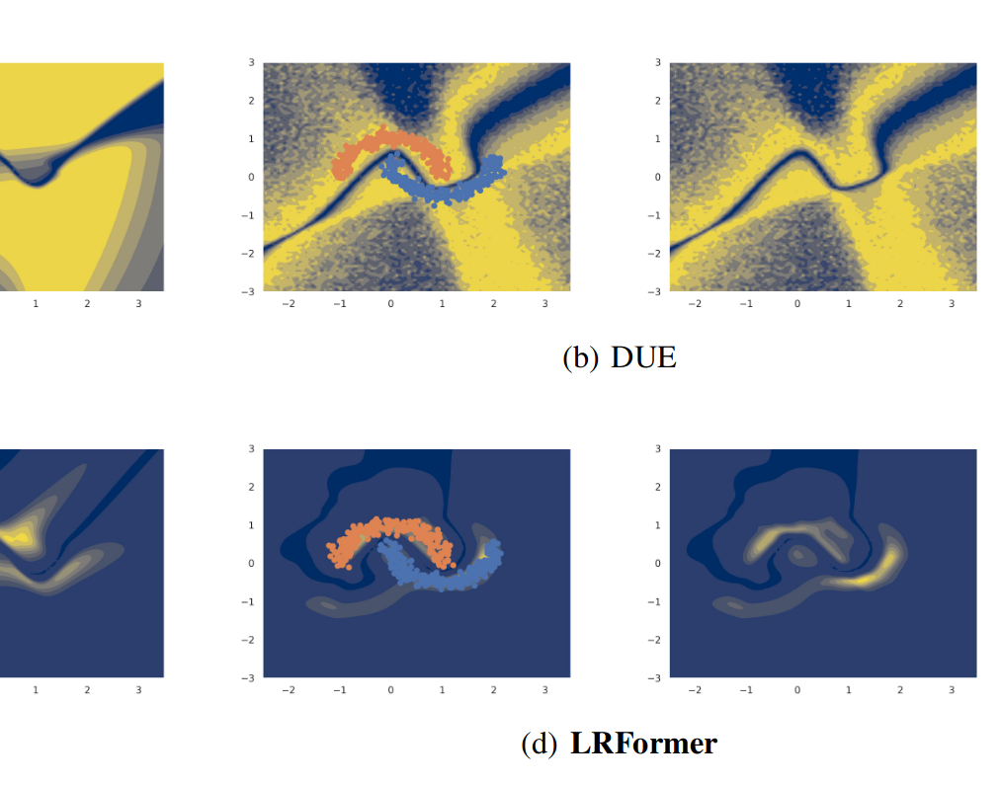
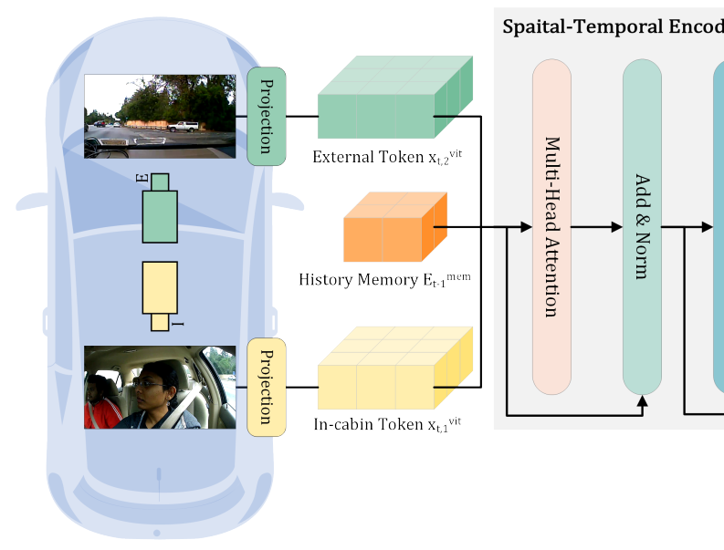
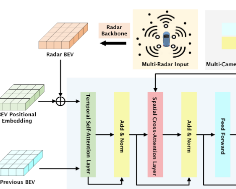
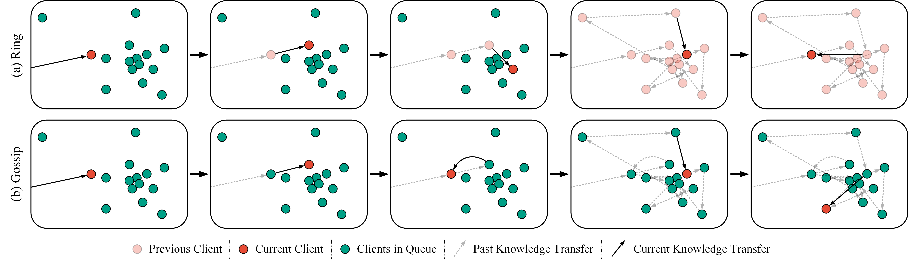

Publications
2023
-

UAIMitigating Transformer Overconfidence via Lipschitz RegularizationIn The 39th Conference on Uncertainty in Artificial Intelligence (UAI) , 2023 -

PreprintCEMFormer: Learning to Predict Driver Intentions from In-Cabin and External Cameras via Spatial-Temporal TransformersarXiv:2305.07840 (Preprint) , 2023 -

PreprintRadar Enlighten the Dark: Enhancing Low-Visibility Perception for Automated Vehicles with Camera-Radar FusionarXiv:2305.17318 (Preprint) , 2023 -

CVPRWPeer-to-Peer Federated Continual Learning for Naturalistic Driving Action RecognitionIn 2023 IEEE/CVF Conference on Computer Vision and Pattern Recognition Workshops (CVPRW) , 2023
 CVPRW
CVPRW